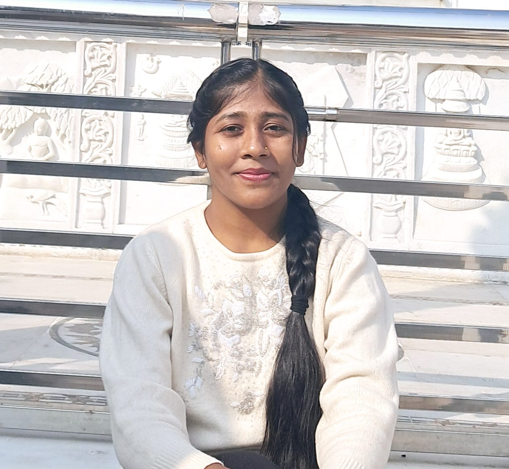

Neha Kumari

Profile Summary
Highly motivated B.Tech (IT) student at Bengal College of Engineering and Technology with a strong academic
record (8.21 CGPA). Proven ability in creative problem-solving, leadership, and teamwork. Seeking challenging
roles to contribute to innovative projects.
Education
Bengal college of engineering and technology
- B-tech in Information Technology
- CGPA: 8.21/10.0
Adarsh Plus 2 Uchh Vidyalaya, Koderma
- Senior Secodary(XII )
- Percentage: 75.80
Grizzly Vidyalaya, Koderma
- Secondary(X)
- Percentage: 92.0
Experience
C++ programming intern
- InternPe
- I have completed my internship in c++ programming at internPe.
- In this internship I was suppose to make 4 projects based on c++ programming.
- I made Guess the number game, Tic Tac Toe game, Connect 4 game and Stone paper Scissor game.
Coding Profiles
- Geeksforgeeks 160+ coding problem solved
- Coding ninjas 350+ coding problem solved
Projects
Github projects repo
- project 1: Guess the number game
- Designed and implemented a C++ ’Guess the Number’ game with varying difficulty levels. Employed random
number generation and user input validation.
- Project 2: stone paper scissor
- Created a C++ Rock-Paper-Scissors game with AI opponent, incorporating random number generation and
user input validation for an engaging gameplay experience.
- Project 3: tic tac toe game
- Implemented a C++ Tic-Tac-Toe game with player vs. player functionality, incorporating game logic, user
input handling, and win/lose/draw determinations.
- Project 4: Connect 4 game
- Developed an AI for the game of Connect Four using C++, employing minimax algorithm with alpha-beta
pruning for optimal decision-making.
Skills
Languages: C++, C, Java basics HTML, CSS
DSA
Extra-Curricular Activities
- Playing Basketball
- Riding bikes
- Teaching
Contact/Connection details